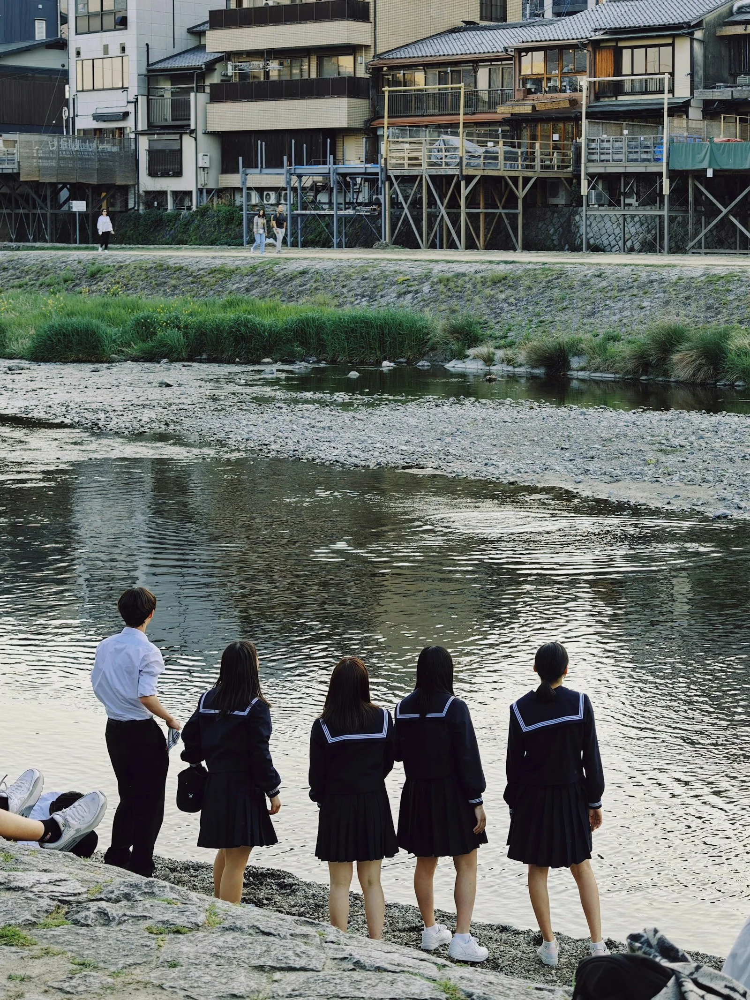
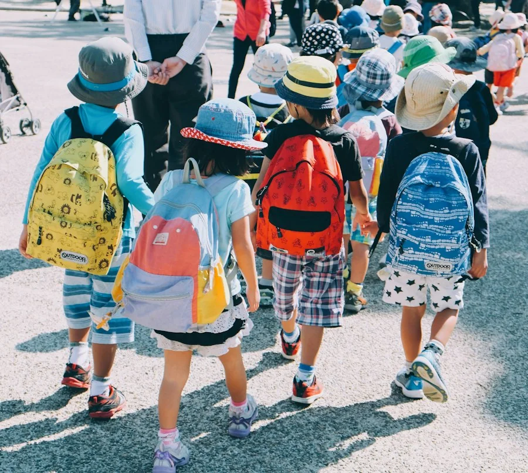
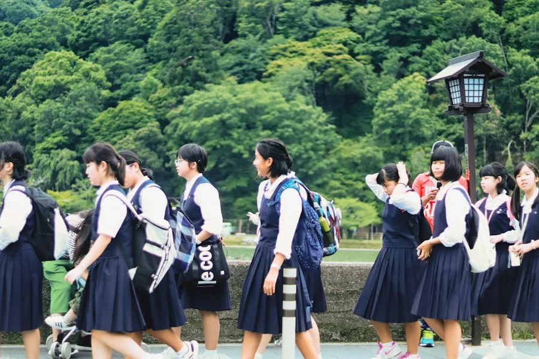
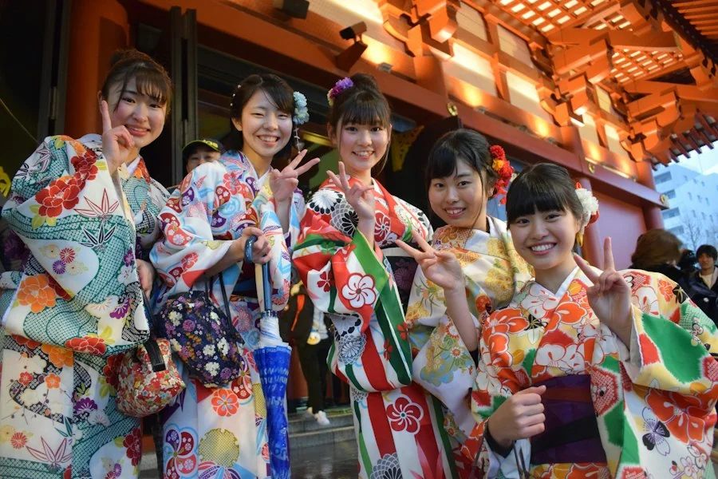
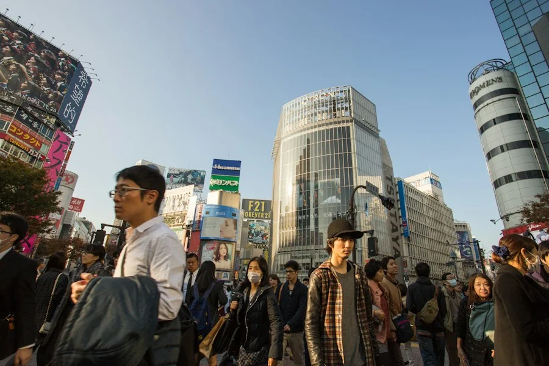
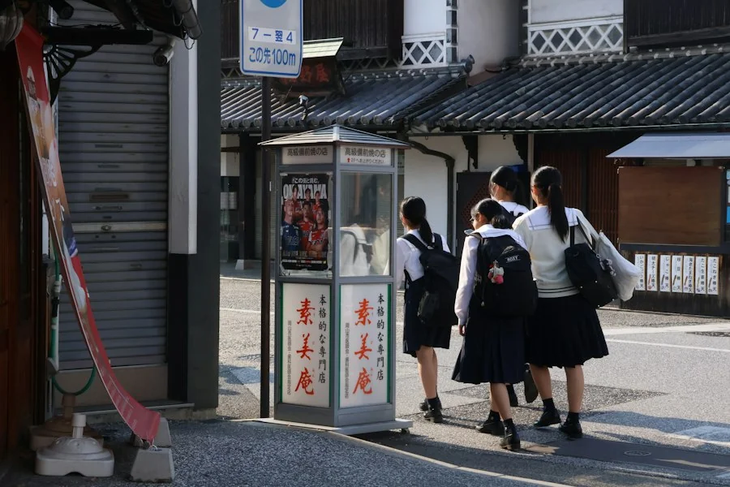
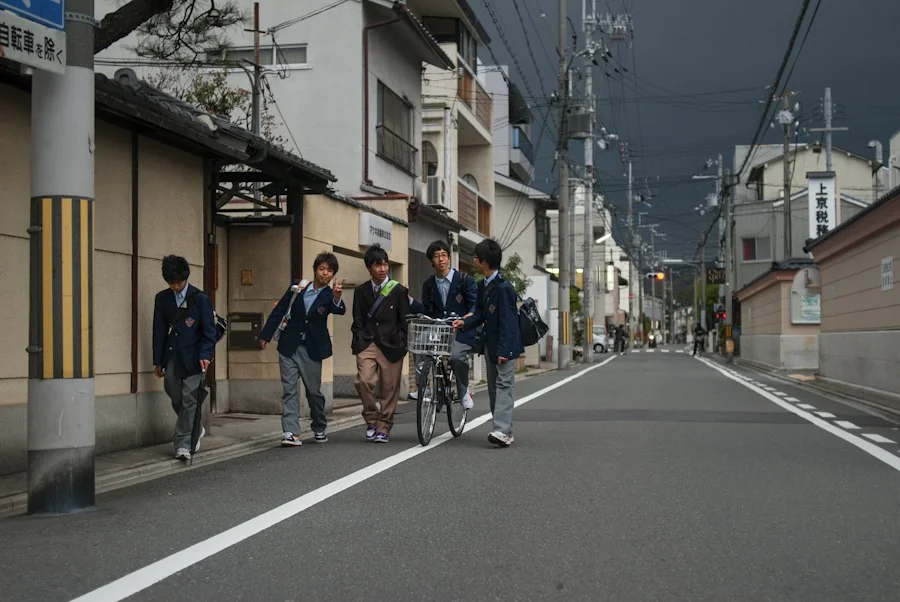
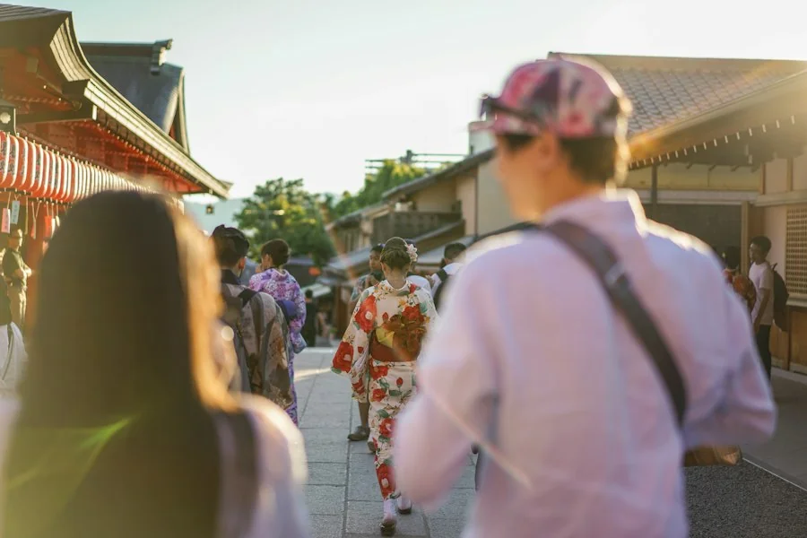
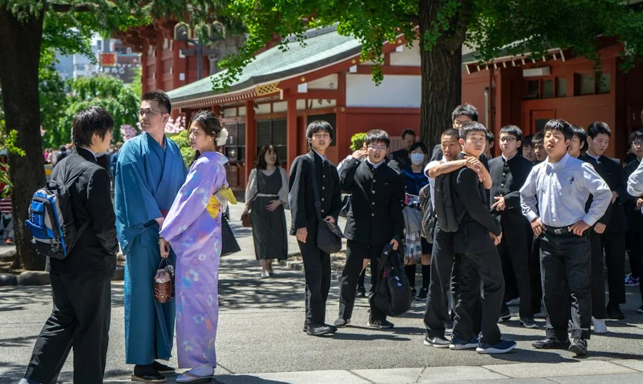

LOCAL AWARD




中学生・高校生 / 応募無料 / 11月30日締切
01
魅力発信
地域の人やお店、風景を知ってもらうための作品。
02
防災安全
災害や日々の危険から身を守るための作品。
03
環境
ゴミや自然環境の課題に取り組む作品。
応募期間
2026年9月1日〜11月30日
応募資格
中学生・高校生
応募料
無料
審査発表
2026年12月20日
魅力発信
地元の祭りを紹介する2分間のショート映像
中学１年・東美咲

魅力発信
駅前観光マップのリデザイン
中学2年・林さくら

魅力発信
シャッター商店街を案内図に変えるポスター
高校2年・佐野陽菜

防災安全
通学路危険個所をまとめた防災マップ
高校3年・岩本直樹

防災安全
避難所の場所が遠くからわかる誘導看板
高校１年・森田悠人

防災安全
高齢者に配る緊急連絡カードのデザイン
高校3年・川口千夏
環境
給食の食べ残しを減らす啓発ポスター
高校2年・宮下蓮
環境
海岸のゴミ拾いを１年間記録した映像
中学3年・大村優
環境
分別方法をすぐ調べられるWebサイト
中学2年・藤井湊